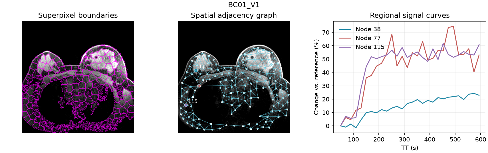

01 给了我们一张随时间变化的 MRI 切片。02 把切片划成小区域，每个区域作为一个节点。每个节点有自己的信号曲线，也知道哪些区域紧挨着它。03 会利用这些邻居关系做一次补全实验。
图中示例 BC01_V1 有 155 个节点、373 条边、28 个时间点。可以把它想成一张 155 × 28 的表，每行一个区域，每列一个时间点，再加一份「哪些行互为邻居」的名单。

可以试着跟着一条线读。例如纵轴到 +20%，表示这个区域内像素的相对变化平均约为 +20%。如果某个点被藏起来，左、右相邻的时间点属于同一区域的时间信息，中图和它相连的点则提供其他区域的空间信息。03 比较这两种信息怎么用。
| 样本 | 节点 | 无向边 | 时间帧 | 平均度 | 孤立节点 |
|---|---|---|---|---|---|
| BC01_V1 | 155 | 373 | 28 | 4.81 | 0 |
| BC01_V2 | 155 | 377 | 28 | 4.86 | 0 |
| BC05_V1 | 160 | 390 | 32 | 4.88 | 0 |
| BC05_V2 | 155 | 374 | 32 | 4.83 | 1 |
| BC06_V1 | 159 | 392 | 32 | 4.93 | 1 |
| BC06_V2 | 154 | 385 | 32 | 5.0 | 0 |
| BC08_V1 | 155 | 373 | 32 | 4.81 | 0 |
| BC08_V2 | 155 | 377 | 32 | 4.86 | 0 |
| BC10_V1 | 155 | 376 | 32 | 4.85 | 1 |
| BC10_V2 | 157 | 369 | 32 | 4.7 | 1 |
| BC12_V1 | 160 | 394 | 32 | 4.92 | 1 |
| BC12_V2 | 154 | 385 | 32 | 5.0 | 2 |
| BC13_V1 | 155 | 378 | 32 | 4.88 | 0 |
| BC13_V2 | 157 | 366 | 32 | 4.66 | 1 |
| BC14_V1 | 155 | 363 | 32 | 4.68 | 1 |
| BC14_V2 | 152 | 370 | 32 | 4.87 | 0 |
| BC15_V1 | 154 | 361 | 32 | 4.69 | 0 |
| BC15_V2 | 156 | 376 | 32 | 4.82 | 2 |
| BC16_V1 | 154 | 372 | 32 | 4.83 | 0 |
| BC16_V2 | 157 | 362 | 32 | 4.61 | 3 |